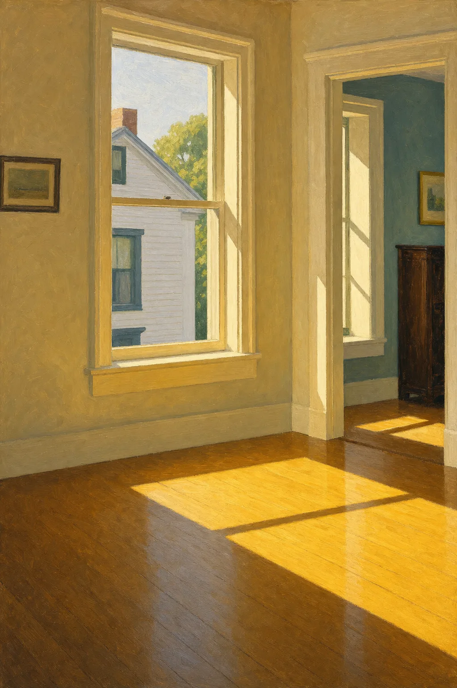

Page 1 of 28
Copacetic
My brother and I are packing for a trip.
My father stands in the doorway.
…
Excerpt only — for the complete poem, see the print/ebook edition or request the full manuscript.
A Poetry Collection · Look Inside
Title page, table of contents, and an opening excerpt from each poem, set with the running heads and pagination of the printed edition.
Look Inside · Not for Download
A reading sampler of Crossings: Selected Poems, published by Silver Current Press in August 2026: title page, table of contents, and an opening excerpt from poems in the collection, presented with the running heads and pagination style of the printed edition. This page is for reading only — there is no download or export of the full manuscript here. The complete book is available on Amazon.
Silver Current Press
Poems · James Mulhern
For my family—
those who remain
and those who have gone before

Page 1 of 28
My brother and I are packing for a trip.
My father stands in the doorway.
…
Excerpt only — for the complete poem, see the print/ebook edition or request the full manuscript.
Page 2 of 28
On that gray day, you chopped the Steinway piano with an axe.
Surrounded by yellow and red leaves on the hard earth,
…
Excerpt only — for the complete poem, see the print/ebook edition or request the full manuscript.
Page 3 of 28
Today I saw a father and son stepping onto the crosswalk.
I braked and watched them pass. Son on father’s shoulders,
…
Excerpt only — for the complete poem, see the print/ebook edition or request the full manuscript.
Page 4 of 28
On our way to the dance, we made a fire under the bridge.
Snow fell heavily outside our place near the train tracks.
…
Excerpt only — for the complete poem, see the print/ebook edition or request the full manuscript.
Page 5 of 28
My only memory of you—
in the dark hallway of your Boston home,
…
Excerpt only — for the complete poem, see the print/ebook edition or request the full manuscript.
Page 6 of 28
When Mom and I arrived, you hid the donut behind the picture.
You sat in the sunny kitchen, embarrassed you’d been caught with a sweet.
…
Excerpt only — for the complete poem, see the print/ebook edition or request the full manuscript.
Page 7 of 28
You sit in the corner, oblivious to the old teacher watching.
Too busy evading the eyes of “cool kids,” who gawk and giggle.
…
Excerpt only — for the complete poem, see the print/ebook edition or request the full manuscript.
Page 8 of 28
Colleagues ask for my criteria grading English papers.
Family asks me meanings of mystifying words.
…
Excerpt only — for the complete poem, see the print/ebook edition or request the full manuscript.
Page 9 of 28
During class
Mary complained,
…
Excerpt only — for the complete poem, see the print/ebook edition or request the full manuscript.
Page 10 of 28
Lions prowl the streets of Johannesburg,
a sleuth of bears rise on hind legs in Yosemite,
…
Excerpt only — for the complete poem, see the print/ebook edition or request the full manuscript.
Page 11 of 28
One day there is no news.
The anchors stare at empty teleprompters.
…
Excerpt only — for the complete poem, see the print/ebook edition or request the full manuscript.
Page 12 of 28
I’m no longer desired.
I was once called handsome
…
Excerpt only — for the complete poem, see the print/ebook edition or request the full manuscript.
Page 13 of 28
When we were children,
we knelt after Communion
…
Excerpt only — for the complete poem, see the print/ebook edition or request the full manuscript.
Page 14 of 28
The twenty-something blonde offered
to lift my suitcase to the overhead compartment.
…
Excerpt only — for the complete poem, see the print/ebook edition or request the full manuscript.
Page 15 of 28
I was twelve.
You were thirty-four,
…
Excerpt only — for the complete poem, see the print/ebook edition or request the full manuscript.
Page 16 of 28
I imagine you looking at the robins’ nest
in the maple outside your bedroom window.
…
Excerpt only — for the complete poem, see the print/ebook edition or request the full manuscript.
Page 17 of 28
I miss the avocado-green rotary phone
and its coiled cord,
…
Excerpt only — for the complete poem, see the print/ebook edition or request the full manuscript.
Page 18 of 28
The old man on the dock—
weathered face,
…
Excerpt only — for the complete poem, see the print/ebook edition or request the full manuscript.
Page 19 of 28
The phone's ring slices the dark.
His wife, voice flat: "It's for you."
…
Excerpt only — for the complete poem, see the print/ebook edition or request the full manuscript.
Page 20 of 28
You know the meeting
when a question asked
…
Excerpt only — for the complete poem, see the print/ebook edition or request the full manuscript.
Page 21 of 28
“Do you have the yellow teapot?” my mother asked.
“Beth told me I promised it to you long ago.”
…
Excerpt only — for the complete poem, see the print/ebook edition or request the full manuscript.
Page 22 of 28
I’d like to be
the Wife of Bath’s scarlet stockings
…
Excerpt only — for the complete poem, see the print/ebook edition or request the full manuscript.
Page 23 of 28
Too old to put her shoes on,
she watched me slip her feet
…
Excerpt only — for the complete poem, see the print/ebook edition or request the full manuscript.
Page 24 of 28
She asks me to put Bacitracin on her heel.
“Do you see a small cut?”
…
Excerpt only — for the complete poem, see the print/ebook edition or request the full manuscript.
Page 25 of 28
That fall day, we raked leaves behind the shed.
Smell of earth and wet decay rose in cold air.
…
Excerpt only — for the complete poem, see the print/ebook edition or request the full manuscript.
Page 26 of 28
In the pew by the stained glass
of Veronica wiping the face of Jesus,
…
Excerpt only — for the complete poem, see the print/ebook edition or request the full manuscript.
Page 27 of 28
Each morning, I injected insulin into my dog,
made sure she had water.
…
Excerpt only — for the complete poem, see the print/ebook edition or request the full manuscript.
Page 28 of 28
My mother asks if I’m happy. I hesitate,
then lie: “All is good.”
…
Excerpt only — for the complete poem, see the print/ebook edition or request the full manuscript.
Get The Quiet Craft: A Working Writer's Notebook — an expanded collection of working notes on fiction, poetry, and memoir craft — free, plus occasional word of new essays, poems, and guides. No spam, unsubscribe anytime.
Join the Circle & Get the Booklet